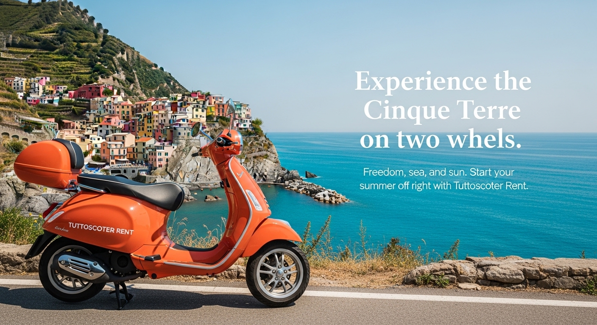

La Spezia is the ideal starting point to explore one of the most fascinating areas in Italy: the Cinque Terre. Whether you arrive at the Port of La Spezia by cruise ship or at the central train station by train, our scooter and car rental service allows you to move around in total freedom without depending on schedules and public transport.
The La Spezia cruise terminal welcomes thousands of international visitors every year who wish to visit the Cinque Terre in a day. The main problem? Trains are often overcrowded and rigid schedules don't allow the flexibility needed to fully enjoy the beauty of the Ligurian coast. With our 125cc scooter or car rental, you can leave when you want and stop where you prefer.
Our rental locations in La Spezia are strategically positioned to serve both cruise passengers and travelers arriving at La Spezia train station. We offer home delivery within 20 km, so we can bring the vehicle directly to your hotel, B&B, or even to the port itself if you arrive by cruise ship.
For solo travelers or couples, the 125cc scooter is the perfect choice: agile in traffic, easy to park and ideal for scenic coastal roads. If you're traveling with family or a group, we also offer city cars and 9-seater vans, perfect for carrying luggage and moving comfortably to destinations like Portovenere, Lerici, or Cinque Terre.
The coastal road connecting La Spezia to the Cinque Terre offers breathtaking views of the Ligurian Sea. With a scooter or car rental from Tuttoscooter, you can stop at every scenic viewpoint, take unforgettable photos and live an authentic experience away from the crowd of tourist trains. Riomaggiore, Manarola, Corniglia, Vernazza and Monterosso are waiting to be explored at your own pace.
Whether you're a tourist on vacation or a cruise passenger with only a few hours available, our scooter and car rental service in La Spezia is the ideal solution to maximize your time and enjoy Liguria in freedom. Contact us via WhatsApp for a quick response and book your vehicle today!